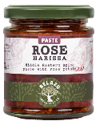

Red prawn spaghetti
Broccoli & spaghetti
- Heat pan of water to boiling
- Cook 100g sprouting broccoli for 2 mins then remove
- Cook 200g spaghetti
- Save some of the water after draining
Sauce
- Fry on medium heat for 8 mins until almost cooked
- 2 tbsp olive oil
- 150g cherry tomatoes
- Add and cook for 1 min
- 2 cloves garlic
- 1 red chilli chopped (if using red pesto)
- Add 150g raw king prawns and cook for 2-4 mins until pink
- Remove heat and add
- 2 tbsp harissa or 3 tbsp red pesto
- zest of ¼ lemon
- sprouting broccoli chopped
- Add spaghetti
- Mix with some pasta cooking water to make smooth
Notes
- Can use 150g broccoli
- Slice thick broccoli stems in half (or cook these for longer)
- Adjust amount of lemon zest depending on how lemony you want it
- Don't fully drain spaghetti so keep liquid in the pot
- 3 portions: 300g spaghetti
- 4 portions: 330g spaghetti, 300g tomatoes, 200g broccoli, 200g prawns, 2 garlic
- Belazu rose harissa
